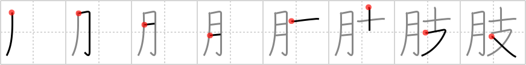

肢
← →
limb

Reading:
On-Yomi: シ
Heisig story:
Part of the body . . . branch.
Koohii stories:
1) [fuaburisu] 14-10-2005(237): The limbs that this kanji represents are parts of the body that are connected to the trunk, like the main branches to a tree (“arms and legs” is the second meaning of this kanji). In other words, limbs are "flesh branches".
2) [ruisu] 4-11-2007(91): Limbs are body parts that branch off.
3) [thermal] 5-6-2008(29): No Timmy, we don't say "flesh branches", we say "limbs".
4) [Newkie] 21-2-2009(17): Limbs are fleshy branches.
5) [AndamanIslander] 11-4-2008(9): Limb = meat branch (sometimes it's almost too easy).